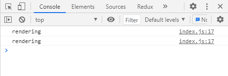

React에는 어떤 값이나 함수 또는 컴포넌트를 memoize 할 수 있는 방안으로 memo, useMemo, useCallback 등을
제공합니다.
이 중에 이번에 알아볼 useCallback은 hooks로서 Function Component의 body에서 작동합니다.
아래의 function
signature와 같이 memoize를 할 대상 함수와 memoize 여부 판단에 사용될 dependency array를 받아 memoized 된 함수를
반환합니다.
function useCallback<T extends (...args: any[]) => any>(callback: T, deps: DependencyList): T
이때 React hooks는 내부적으로 memory cells라 불리는 객체를 만들어 각 hook들이 몇번, 어떤 순서로 호출되었는지 저장
및 추적합니다.
그 뒤 컴포넌트의 state 및 props가 변경되어 rerendering이 되면 hook들이 동일한 순서대로 호출되기 때문에 hook을
여러번 사용하더라도 memory cells를 보고 올바른 값을 반환할 수 있습니다.
hooks를 조건문이나 반복문에서 사용할
수 없는 것이 바로 이런 이유에서 입니다.
이번 예제의 결과는 console 창에서만 확인 가능합니다
브라우저 콘솔창 여는 법 ( chrome 기준 )

Q. React.useCallback 함수를 단순한 방식으로 모방해서 만들어보세요.
./question/index.js ./question/useCallback.js
경로
./question
index.html 파일을 브라우저로 열거나 로컬 웹 서버로 실행하기
$ npx serve -l 3000